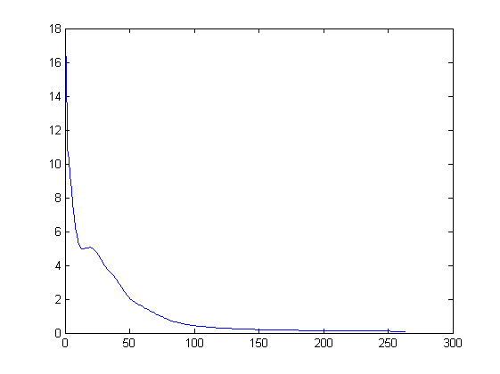
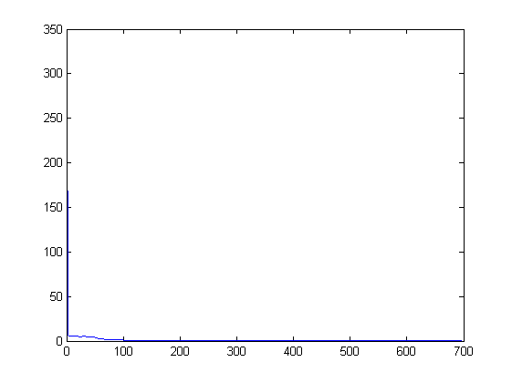
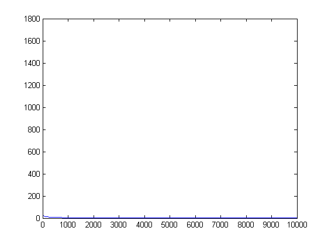
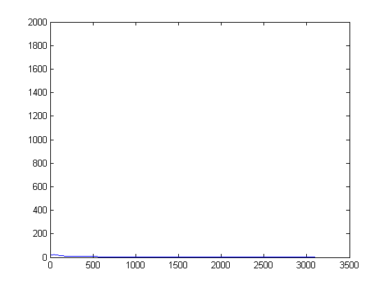

Contents
LOADING TRAINING SET
clc;
clear;
sz=20;
[TSc,TSn,TSl,TSu]=loadTS(sz);
Loading images of numbers...
Loading images of lowercases...
Loading images of uppercases...
TRAINING NEURAL NETWORKS
[NET,ER]=characterTraining(TSc,TSn,TSl,TSu);
figure,plot(ER.ERc);
figure,plot(ER.ERn);
figure,plot(ER.ERl);
figure,plot(ER.ERu);
Training the category recognition network.
Random two layered neural network initialized with:
400 inputs
3 outputs
20 hidden units
Backpropagation Algorithm initialized with:
learning rate: 0.050
momentum :0.800
maximum num. of iterations: 10000
Back-Propagation terminated with squared error minimized to 0.100.
Elapsed time is 70.853968 seconds.
Training the numbers recognition network.
Random two layered neural network initialized with:
400 inputs
10 outputs
40 hidden units
Backpropagation Algorithm initialized with:
learning rate: 0.050
momentum :0.800
maximum num. of iterations: 10000
Back-Propagation terminated with squared error minimized to 0.100.
Elapsed time is 54.380329 seconds.
Training the lower cases recognition network.
Random two layered neural network initialized with:
400 inputs
26 outputs
55 hidden units
Backpropagation Algorithm initialized with:
learning rate: 0.050
momentum :0.800
maximum num. of iterations: 10000
Back-Propagation terminated with squared error minimized to 0.999.
Elapsed time is 2836.210782 seconds.
Training the upper cases recognition network.
Random two layered neural network initialized with:
400 inputs
26 outputs
55 hidden units
Backpropagation Algorithm initialized with:
learning rate: 0.050
momentum :0.800
maximum num. of iterations: 10000
Back-Propagation terminated with squared error minimized to 0.100.
Elapsed time is 851.941253 seconds.
   